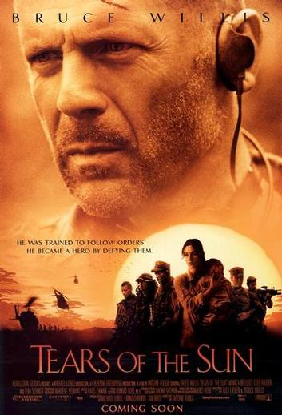
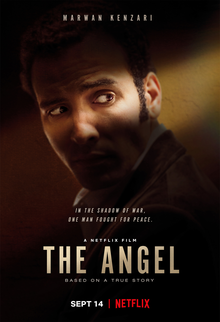

The age of Adaline
- Drama,Fantasy
- Adaline Bowman (Blake Lively) has miraculously remained a youthful
29 years of age for nearly eight decades, never allowing herself to get
close to anyone lest they discover her secret. However, a chance encounter with
a charismatic philanthropist named Ellis Jones (Michiel Huisman) reawakens Adaline's
long-suppressed passion for life and romance. When a weekend with Ellis' parents threatens
to expose the truth, Adaline makes a decision that changes her life forever.
- Release date: 2015
Hotel Transylvania
- Comedy,Fantasy
- When monsters want to get away from it all, they go to Count Dracula's
(Adam Sandler) Hotel Transylvania, a lavish resort where they can be themselves without humans
around to bother them. On one special weekend, Dracula invites creatures like the Invisible Man,
the Mummy and others to celebrate the 118th birthday of his daughter, Mavis (Selena Gomez).
However, an unforeseen complication unfolds when an ordinary human unwittingly crashes the party
and falls in love with Mavis.
- Release date: 2012
Tears of the sun
- Drama,Thriller
- The Nigerian government has fallen, and the country is on the verge of
civil war. Lt. A.K. Waters (Bruce Willis) has been assigned to lead a team of soldiers into the
Nigerian jungle to rescue Dr. Lena Kendricks (Monica Bellucci). When Waters and his team locate
Kendricks, she tells them she won't leave her helpless patients to be slaughtered by rebels. The
team incurs the wrath of both U.S. and Nigerian forces when they side with Kendricks and attempt
to march the refugees to safety.
- Release date: 2003

The Angel
- Thriller, Drama
- True story of Ashraf Marwan, who was President Nasser's son-in-law and special
adviser and confidant to his successor Anwar Sadat - while simultaneously Israeli Intelligence's most precious
asset of the 20th century. Based on NYT bestselling book 'The Angel: The Egyptian Spy Who Saved Israel'
by Uri Bar-Joseph.
- Release date: 2018

Home